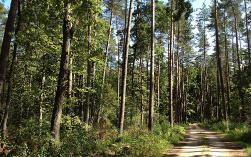

➳ Use less fossil fuels
Cars. They are an essential part of our everyday lives. They are also essential to killing our planet. Cars produce a lot of carbon emissions. By walking, biking, or taking public transport (e.g. buses), we can reduce our negative impact on the planet.
➳ Other tips
Some other things you can do to help:
» Don't eat beef! Cows produce a lot of methane, a greenhouse gas.
» Reduce electricity use! Though electricity is a clean source of energy, the way it is produced involves a lot of carbon emissions.
» Shop for fruit and veggies locally! Transporting food to a supermarket uses 4 to 17 times more petrol than to your local market.
» Plant trees! Trees take in carbon dioxide and convert it to oxygen. This is good for the environment!